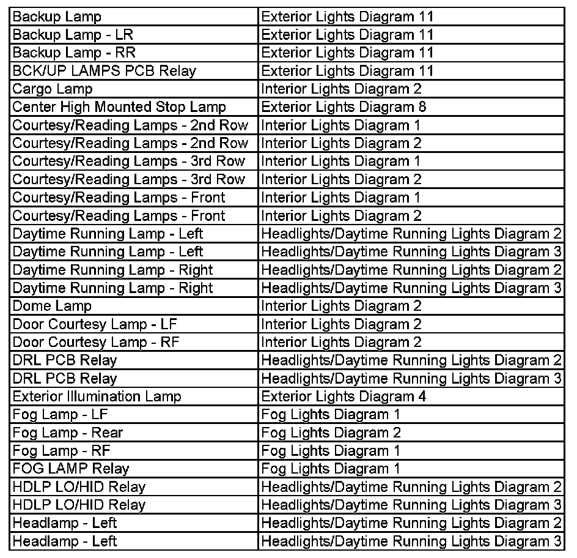
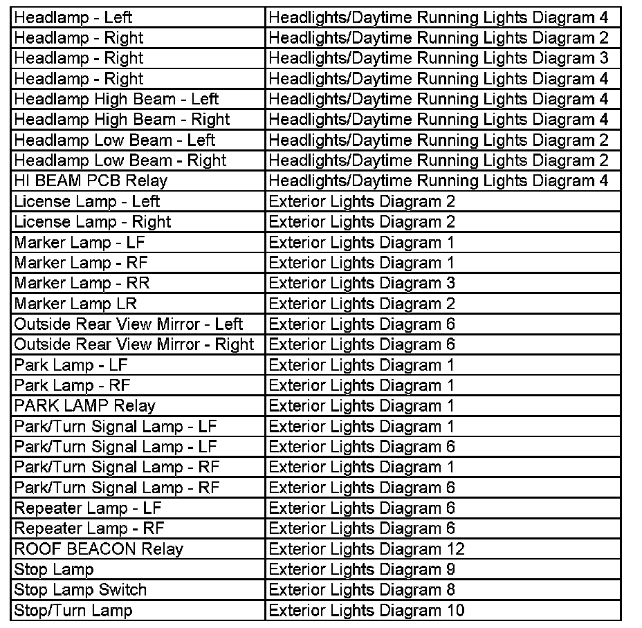
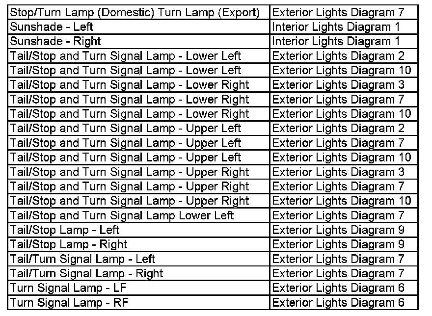

Operation CHARM
: Car repair manuals for everyone.
Home
>>
Cadillac
>>
2007
>>
Escalade ESV AWD V8-6.2L
>>
Repair and Diagnosis
>>
Lighting and Horns
>>
Diagrams
>>
Electrical Diagrams
>>
Wiring Diagram Index
Wiring Diagram Index
Ba-He:

He-St:

St-Tu:
